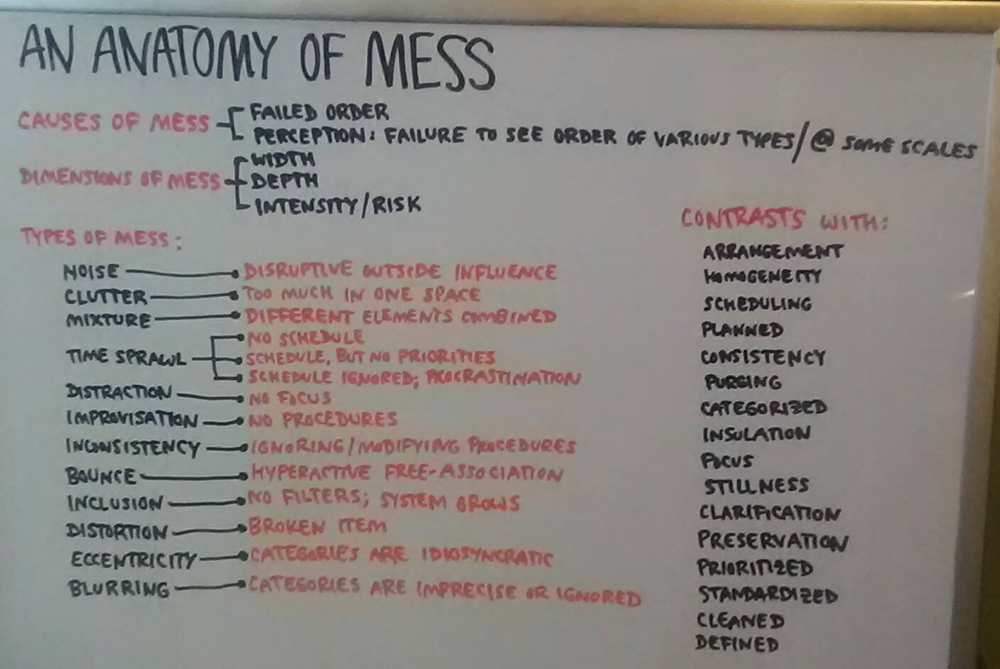
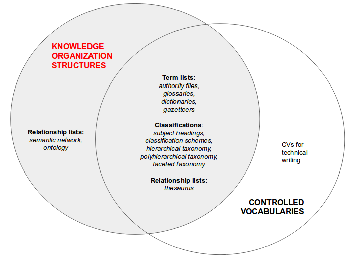

https://jtkovacs.github.io/pkb.html > https://jtkovacs.github.io/REFS/HTML/information-architecture.html
IR occurs when a user retrieves information objects AKA content objects (documents and metadata) from an information retrieval system (e.g. libraries, archives, repositories/portals, websites, databases). IR requires IA.
Information professionals work to ensure that IR (1) has good precision; (2) has good recall; and (3) is possible across multiple IR systems. They do this by (1) creating search algorithms or by (2) ingesting information objects into a catalog, which includes:
CATALOGING the object, i.e. describing/representing an information object with metadata, including subject headings and subheadings. Subject headings and subheadings can be combined from the beginning (precoordination) or combined by users while searching (postcoordination)
INDEXING the object, i.e. mapping out the contents of an information object, perhaps using terms from a CV (at minimum, for named entities, an authority file should be consulted).
Although TAGGING or keywording is occasionally used as a synonym for indexing, it is more often used to denote the opposite of indexing, in which keywords emerge from an information itself rather than from an indexing language. This allows for a grassroots view of what something is about.
| INDEXING AGENT | ||||
|---|---|---|---|---|
| Taxonomist | Users | Machine | ||
| TAXONOMY | Yes | Closed | n/a | Auto-Tagging, Auto-Classification, Auto-Categorization |
| No | Open | Tagging | Information Extraction | |
To retrieve information, users engage with information systems by:
SEARCHING for a specific piece of information; this is the concern of back-end IA. Simultaneous search of multiple information systems is called metasearching, broadcast searching, cross-database searching, federated searching, and parallel searching.
BROWSING a collection of information; this is the concern of front-end IA, with the goal of intuitive user interfaces and navigational structures. Browsing is "quick examination of the relevance of a number of objects which may or may not lead to a closer examination or acquisition/selection of (some of) these objects" Hjørland (2011); "visually scanning through organized collections of representations of content objects" (ANSI/NISO Z39.19-2005, p. 157).
Rosenfeld, Morville, and Arango (2015) say that IA aims to facilitate both the finding and understanding of information. The "finding" dimension of IA is information retrieval, the legacy of library science; the "understanding" dimension comes via Richard Saul Wurman, who focused on making complex systems intelligible through visualization.
Per Abrahamson and Freedman (2008), order (like all things) has both benefit and cost. Even setting feasibility aside, it's probably never the case that 100% order is optimal. At the same time, because individuals' organization strategies and preferences vary so much, shared information spaces must (?) be organized according to intelligible principles that prospective users of the space can access and learn.
Per Abrahamson and Freedman (2008):

Heather Hedden (2016) offers this typology in which taxonomies (i.e., knowledge organization structures) have different bases/origins. KOSs may be (1) objective, with obvious empirical basis; (2) socially-negotiated, perhaps eventually becoming (3) culturally embedded; or (4) idiosyncratic:
Schemas and structures work together. For example, my Zotero library is a hierarchy (structure) of topical categories (schema), automatically sorted by alphabet (schema). The distinction I draw is that "schemas" are for the conceptual (abstract, disembodied) organization of information into groups, whereas "structures" describe group configuration.
Wurman (1990) claims there are only five ways to organize items. Similarly, Wyllys (2000) states that information can be organized according to different schemas that encompass Wurman's five ways (italicized):
But, Wyllys adds, there are also three fundamental information structures, AKA data models. In their review of database history (gens 1-3), Connolly and Begg (2015) classify Wyllys' three structures as "record-based", and add "object-oriented" as another top-level category:
Record-based structures can’t express constraints on the data, but express structure well
(1G) Graph structures, AKA networks, triples, ontologies. Enables explicit modeling of different kinds of relationships (Has, IsCreatedBy, etc.) as well as more relationships (not restricted to one parent). Records are also called nodes and segments; relationships are also called edges.
(2G) Relational structures are tables with columns, and implicit relationships via attributes.
Per Hedden, taxonomy --- the law or science (nomos) of order (taxis) --- has both general and specific meanings.
In general, taxonomy is the discipline of creating and managing taxonomies, a term synonymous with knowledge organization structures/systems (KOS) and very nearly synonymous with controlled vocabularies (CVs). As a field, taxonomy has roots in biological taxonomies and library catalogs (which existed even in antiquity as scrolls). Companies began to use taxonomies for corporate knowledge asset management very marginally in the 1980s, then increasingly in the 1990s as web technologies spread.
Beyond this general sense, taxonomies are also specific kinds of KOSs.

In order of increasing complexity (number, kind, and configuration of relationships):
| KOS | Ambiguity control | Synonym control | Hierarchical relationship | Associative relationship |
|---|---|---|---|---|
| Term list | X | |||
| Syn ring | X | X | ||
| Taxonomy | X | X | X | |
| Thesaurus | X | X | X | X |
Term lists are essentially flat list, though they may include "See"/"Use" to steer people towards preferred language, or use a synonym ring approach (no preferred term among multiple).
Synonym rings AKA synsets associate synonyms without indicating preference for one over the others (equivalence relationship). Synsets are usually invisible to users, e.g. underpinning a search engine.
Taxonomies AKA hierarchies AKA hierarchical taxonomies AKA tree structures arrange terms into parent/child relationships beneath a single top term (TT). A strict hierarchy requires that each term have a single parent AKA broader term (BT), though they may have multiple siblings and children AKA narrower terms (NT).
Indexing a content object with a term is called posting; a given term contains X postings. The practice of indexing a content object with a broader term rather than a narrower term is called generic posting. If, instead, the content object is indexed with narrower and broader terms, this is called up-posting AKA autoposting. Generic posting also means subsuming narrower terms under a preferred broader term in a controlled vocabulary.
Taxonomies are a top-down approach. Thus, there may occasionally be node labels AKA blind references AKA facet indicators: terms in a CV that are never applied to a content object, but exist to preserve a coherent logical structure or to expose the logic behind choices made.
Microcontrolled vocabularies are subsets of a controlled vocabulary, creating a specialist CV.
Faceted taxonomies are a bottom-up approach to providing multiple views of the same content objects, based on shared attributes like topic, location, format, author, etc. They are often presented as navigation aids or search refinments; they may also be used to organize very large controlled vocabulary.
Polyhierarchies are hierarchies in which children may have multiple parents.
Thesauri capture associative relationships AKA related terms (RT) in addition to equivalence (U/UF) and hierarchical (BT/NT) relationships. Relationships are also called cross-references; they should be reciprocal (explicit entry at term Y linking to term X, explicit entry at term X linking to term Y) and may or may not be symmetric. Thesauri are useful for representing a very large controlled vocabulary.
Semantic networks fall short, in some way, of full ontologies, which are defined by their:
Relevant technologies include RDF, OWL, and topic maps.
As part of ingesting a content object into an information system, KOSs can be applied to the content object at several levels, creating more or less granular pictures of what the object is about:
Information consumers depend on KOSs to browse and search content objects:
Reference works are information-dense resources meant to be consulted for specific information, not read comprehensively. Terminology for reference works is reviewed here because it often overlaps with KOS terminology. Definitions are quoted/paraphrased from Wikipedia:
CVs consist of terms and semantic relationships, described in term records.
Controlled vocabularies stand in contrast with natural languages, which undermine information retrieval because they are fraught with polysemes (ambiguous words --- both homographs and synonyms/near-synonyms/quasi-synonyms). At minimum, to avoid the IR pitfalls of natural languages CVs must:
Per ANSI/NISO Z39.19 (p. 19),
Taxonomies may be automatically generated.
Terms are chosen if warrant exists; this warrant may take a while to develop, leading to the category of candidate terms AKA provisional terms. Warrants have different bases:
A preferred term may or may not be designated among synonyms. Preferred terms are also called descriptors or headings; non-preferred terms are also called entry terms or lead-in terms. Terms may be compound, either bound (denoting a single concept) or consisting of a focus noun (also called head nous) plus a qualifier (in the case of homographs). A term may be an orphan, lacking any relationship to other terms.
Per ANSI/NISO Z39.19 (p. 16), recall is improved by indicating relationships:
Precision (minimizing false hits) is improved by controlling ambiguity:
Abrahamson, E. & Freedman, D. H. (2008). A perfect mess: The hidden benefits of disorder --- How crammed closets, cluttered offices, and on-the-fly planning make the world a better place. New York City, NY: Back Bay Books.
AfterHoursProgramming.com. (n.d.) IA tutorial. Retrieved from http://www.afterhoursprogramming.com/tutorial/Information-Architecture/Overview/
ANSI/NISO. (2005). Z39.19-2005: Guidelines for the construction, management, and format of monolingual controlled vocabularies. Retrieved from http://www.niso.org/apps/group_public/download.php/12591/z39-19-2005r2010.pdf
Connolly, T. & Begg, C. (2015). Database systems: A practical approach to design, implementation, and management (6th ed.). New York City, NY: Pearson Education.
Hedden, H. (2016). The accidental taxonomist (2e). Medford, NJ: Information Today, Inc.
Hjørland, B. (2011). Theoretical clarity is not "Manicheanism": A reply to Marcia Bates. Journal of Information Science, 37(5), 546-552. Retrieved from http://pure.iva.dk/files/31053333/JIS_1568_v3.pdf
Jacob, E. K. (2004). Classification and categorization: a difference that makes a difference. Library Trends, 52(3), 515. Retrieved from https://pdfs.semanticscholar.org/774e/ab27b22aa92dfaa9aeeeafbe845058e85f58.pdf
NISO. (1997). TR02-1997: Guidelines for indexes and related information retrieval devices. Retrieved from http://www.niso.org/publications/tr/tr02.pdf
Pomerantz, J. (2015). Metadata. The MIT Press Essential Knowledge Series. Boston, MA: MIT Press.
Rosenfeld, L., Morville, P., & Arango, J. (2015). Information architecture for the web and beyond (4e). Sebastopol, California: O'Reilly Media.
UX Booth. (2015). A complete beginner's guide to information architecture. Retrieved from http://www.uxbooth.com/articles/complete-beginners-guide-to-information-architecture/
Wurman, R. S. (2014). Give yourself permission to follow your nose [video]. Retrieved from https://www.youtube.com/watch?v=SDm1zXxpkr8
Wurman, R. S. (1990). Information anxiety. New York City, NY: Bantam Books.
Wurman, R. S. (1997). Information architects. New York City, NY: Graphis Inc.
Wyllys, R. E. (2000). Information architecture. Retrieved from https://www.ischool.utexas.edu/~l38613dw/readings/InfoArchitecture.html
Zeng, M. (n.d.). 4.3 Hierarchical relationships. In Construction of controlled vocabularies: A primer. Retrieved from http://marciazeng.slis.kent.edu/Z3919/43hierarchy.htm